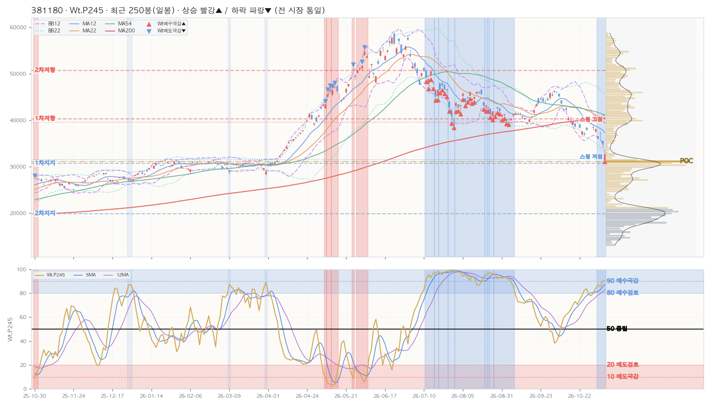

| 구분 | 가격 | 현재가 대비 | 거래 비중 | 봉우리 높이 |
|---|---|---|---|---|
| ▲ 저항 1차 | 40,324 | +23.5% | 5.7% | 0.37 |
| ▲ 저항 2차 | 50,738 | +55.4% | 4.5% | 0.11 |
| ▲ 저항 3차 — | 현재가 위 거래 봉우리 2개뿐 | |||
| ■ 소화 중 — | 현재가 ±0.25×ATR 안 거래 봉우리 없음 | |||
| ▼ 지지 1차 | 30,710 | -5.9% | 13.1% | 0.78 |
| ▼ 지지 2차 | 19,895 | -39.1% | 13.1% | 0.85 |
| ▼ 지지 3차 — | 현재가 아래 거래 봉우리 2개뿐 | |||
| ┄ 스윙 고점 (참고) | 39,525 | +21.1% | 피벗 4개 · 마지막 7봉 전 | |
| ┄ 스윙 저점 (참고) | 31,495 | -3.5% | 피벗 4개 · 마지막 151봉 전 | |
| 지표 | D 일봉 | W 주봉 | M 월봉 |
|---|---|---|---|
| Close | 32,650 | 32,650 | 32,650 |
| Chg% | ▼-6.12% | ▼-14.72% | ▼-14.72% |
| SigNm | 82.0 | 75.8 | 72.0 |
| SigRk | 84.9 | 86.9 | 91.6 |
| PvN2 | -6 | -4 | -3 |
| WtAll | 94 | 79 | 98 |
nix_snapshot_market_temp_kr.json (2026-11-06 · 읽기 전용 크로스 참조)| 창 | 5봉 | 12봉 | 22봉 | 54봉 | 120봉 | 245봉 | 컴포짓 | 주봉 참고 |
|---|---|---|---|---|---|---|---|---|
| 사분면 | 지연 | 약화 | 리딩 | 지연 | 개선 | 개선 | 개선 | 개선 |
| RS-Ratio | 99.65 ▼ | 102.33 ▼ | 104.76 ▲ | 96.57 ▲ | 94.67 ▲ | 86.25 ▲ | 97.67 ▼ | 97.48 ▲ |
| RS-Momentum | 90.43 ▲ | 93.15 ▼ | 114.30 ▼ | 98.83 ▼ | 120.64 ▼ | 118.34 ▲ | 106.60 ▼ | 109.74 ▲ |
| Perf | Mac | Tcr.U | Tcr.D | Zc | BBs | PvN2 | Sts | Wt.P245 | SA.P245 | SA02.P245 | S122.P245 | S051.P245 | SU31.P245 | Inds.Sig | ||||||||||||||||||||||||||||||||||||||||||||||||||
|---|---|---|---|---|---|---|---|---|---|---|---|---|---|---|---|---|---|---|---|---|---|---|---|---|---|---|---|---|---|---|---|---|---|---|---|---|---|---|---|---|---|---|---|---|---|---|---|---|---|---|---|---|---|---|---|---|---|---|---|---|---|---|---|---|
| SigNm | SigRk | |||||||||||||||||||||||||||||||||||||||||||||||||||||||||||||||
| Date | T-Set | H | L | C | V | Chg% | DChg% | YTD | P5 | P12 | P16 | P22 | P54 | P120 | P245 | Cdl | 종합 | 단 | 중 | 장 | 5 | 12 | 22 | 54 | 5 | 12 | 22 | 54 | 12 | 22 | 54 | 12 | 22 | 54 | D | MA_Sts | C_Sts | EMC_Sts | .P | .J | Bar(P) | Ar | .P | .J | Bar(P) | Ar | .P | .J | Bar(P) | Ar | .P | .J | Bar(P) | Ar | .P | .J | Bar(P) | Ar | .P | .J | Bar(P) | Ar | D | D |
| 2026-11-06 | else | 33,135 | 31,500 | 32,650 | 4.8M | -6.1 | +0.0 | +20.2 | -14.7 | -17.7 | -19.0 | -29.4 | -28.4 | -29.4 | +23.7 | -7 | 7 | 7 | 7 | 7 | 0.2 | 0.3 | 0.3 | 0.4 | 0.5 | 0.9 | 2.0 | 2.6 | -2.3 | -2.1 | -3.0 | -5.5 | -4.9 | -11.1 | -6 | 🟥🟥🟦🟦🟦🟦🟦🟦 | 🟦🟦🟦🟦🟦🟦🟦🟦 | 🟦🟦🟦🟦🟦🟦🟦🟦 | 90.6 | 🅿️ | ███████████ | ▲ | 95.1 | ✅ | ████████████ | ▲ | 83.2 | 🟦 | ██████████ | ▲ | 94.2 | 🅿️ | ████████████ | ▲ | 84.4 | 🟦 | ██████████ | ▲ | 65.2 | 🔷 | ████████ | ▲ | 82.0 | 84.9 |
| 2026-11-05 | else | 35,690 | 34,670 | 34,780 | 2.4M | -6.1 | -6.1 | +28.1 | -12.4 | -10.0 | -17.7 | -23.2 | -24.1 | -23.7 | +29.3 | 5 | 1 | -7 | 0 | 7 | 0.1 | 0.1 | 0.1 | 0.2 | 0.5 | 0.8 | 1.9 | 2.5 | -2.1 | -1.7 | -2.5 | -0.6 | 0 | -3.8 | -6 | 🟥🟥🟦🟦🟦🟦🟦🟦 | 🟥🟦🟦🟦🟦🟦🟦🟦 | 🟦🟦🟦🟦🟦🟦🟦🟦 | 89.9 | Ⓜ️ | ███████████ | ▲ | 95.4 | ✅ | ████████████ | ↔ | 80.7 | 🟦 | ██████████ | ▲ | 96.0 | ✅ | ████████████ | ▲ | 83.9 | 🟦 | ██████████ | ▲ | 42.3 | 🔸 | █████ | ▲ | 79.3 | 87.0 |
| 2026-11-04 | else | 37,525 | 35,575 | 37,050 | 3.3M | +2.7 | -11.9 | +36.4 | -8.0 | -6.5 | -11.9 | -19.2 | -19.6 | -14.7 | +35.8 | 5 | 1 | -7 | 0 | 7 | 0.2 | 0.3 | 0.3 | 0.3 | 0.5 | 0.7 | 1.8 | 2.3 | -1.0 | -1.1 | -1.7 | -0.7 | 0 | -2.3 | 0 | 🟥🟥🟦🟦🟦🟦🟦🟦 | 🟥🟦🟦🟦🟦🟦🟦🟦 | 🟥🟦🟦🟦🟦🟦🟦🟦 | 85.4 | Ⓜ️ | ███████████ | ▲ | 93.2 | 🅿️ | ████████████ | ↔ | 75.5 | 🔵 | █████████ | ▲ | 88.0 | Ⓜ️ | ███████████ | ↔ | 82.4 | 🟦 | ██████████ | ▲ | 13.2 | 🆘 | █ | ↔ | 64.9 | 77.9 |
| 2026-11-03 | else | 36,615 | 36,000 | 36,065 | 2.2M | -5.1 | -9.5 | +32.8 | -4.8 | -9.9 | -17.3 | -18.6 | -19.9 | -17.0 | +32.3 | 11 | 1 | -7 | 0 | 7 | 0.2 | 0.2 | 0.2 | 0.2 | 0.7 | 0.7 | 1.9 | 2.4 | -2.0 | -1.5 | -2.2 | -0.1 | 0 | -1.6 | -6 | 🟥🟥🟦🟦🟦🟦🟥🟦 | 🟥🟦🟦🟦🟦🟦🟦🟦 | 🟥🟦🟦🟦🟦🟦🟦🟦 | 86.9 | Ⓜ️ | ███████████ | ▲ | 94.7 | 🅿️ | ████████████ | ↔ | 73.7 | 🔵 | █████████ | ▲ | 96.1 | ✅ | ████████████ | ↔ | 81.1 | 🟦 | ██████████ | ▲ | 5.3 | 🚫 | ↔ | 76.5 | 85.6 | |
| 2026-11-02 | else | 38,210 | 37,300 | 38,010 | 1.6M | -0.7 | -14.1 | +40.0 | +3.0 | -5.7 | -15.8 | -13.6 | -14.7 | -10.6 | +38.3 | 0 | 1 | -7 | 0 | 7 | 0.2 | 0.4 | 0.4 | 0.5 | 0.6 | 0.5 | 1.7 | 2.1 | -0.7 | -1.0 | -1.5 | 0 | 0 | 0 | 0 | 🟥🟥🟦🟦🟦🟦🟥🟦 | 🟥🟦🟦🟦🟦🟦🟦🟦 | 🟥🟦🟦🟦🟦🟦🟦🟦 | 84.1 | 🟦 | ██████████ | ▲ | 90.9 | 🅿️ | ███████████ | ↔ | 71.7 | 🔵 | █████████ | ▲ | 93.3 | 🅿️ | ████████████ | ↔ | 78.6 | 🔵 | ██████████ | ↔ | 1.1 | ⛔ | ▼ | 71.1 | 80.6 | |
| 2026-10-30 | else | 39,140 | 37,920 | 38,285 | 1.7M | -3.6 | -14.7 | +41.0 | +1.8 | -9.4 | -16.8 | -13.0 | -17.0 | -6.5 | +39.5 | 9 | 1 | -7 | 0 | 7 | 0.4 | 0.5 | 0.5 | 0.6 | 0.4 | 0.4 | 1.6 | 2.0 | -0.6 | -1.0 | -1.5 | 0 | 0 | 0 | 0 | 🟥🟥🟦🟦🟦🟦🟦🟦 | 🟥🟦🟦🟦🟦🟦🟦🟦 | 🟥🟦🟦🟦🟦🟦🟦🟦 | 80.3 | 🟦 | ██████████ | ↔ | 86.2 | Ⓜ️ | ███████████ | ▼ | 67.4 | 🔷 | ████████ | ▲ | 89.1 | Ⓜ️ | ███████████ | ↔ | 76.4 | 🔵 | █████████ | ↔ | 1.0 | ⛔ | ↔ | 67.7 | 78.3 | |
| 2026-10-29 | else | 40,235 | 39,165 | 39,705 | 2.0M | -1.4 | -17.8 | +46.2 | +3.4 | -5.6 | -14.1 | -11.4 | -11.3 | -0.1 | +46.9 | 8 | 1 | -7 | 0 | 7 | 0.6 | 0.6 | 0.7 | 0.8 | 0.2 | 0.6 | 1.5 | 1.8 | 0.3 | -0.7 | -1.0 | 0 | 0 | 0 | 0 | 🟥🟥🟦🟦🟦🟦🟦🟥 | 🟥🟦🟦🟦🟦🟦🟥🟥 | 🟥🟥🟦🟦🟦🟦🟥🟥 | 77.8 | 🔵 | ██████████ | ↔ | 83.8 | 🟦 | ██████████ | ▼ | 70.7 | 🔵 | █████████ | ▲ | 73.3 | 🔵 | █████████ | ▼ | 80.5 | 🟦 | ██████████ | ▲ | 2.2 | ⛔ | ↔ | 54.2 | 70.4 | |
| 2026-10-28 | else | 40,380 | 39,420 | 40,280 | 2.0M | +6.4 | -18.9 | +48.3 | +1.6 | -7.7 | -11.0 | -7.8 | -8.9 | +2.4 | +50.6 | -11 | 1 | -7 | 0 | 7 | 0.4 | 0.5 | 0.6 | 0.8 | 0.1 | 0.6 | 1.4 | 1.8 | 0.5 | -0.6 | -0.8 | 0 | 0 | 0 | 0 | 🟥🟥🟦🟦🟦🟦🟦🟥 | 🟥🟥🟦🟦🟦🟦🟥🟥 | 🟥🟥🟦🟦🟦🟦🟥🟥 | 78.6 | 🔵 | ██████████ | ↔ | 90.3 | 🅿️ | ███████████ | ↔ | 67.7 | 🔷 | ████████ | ▲ | 81.3 | 🟦 | ██████████ | ▼ | 81.0 | 🟦 | ██████████ | ▲ | 7.8 | 🚫 | █ | ↔ | 53.1 | 67.8 |
| 2026-10-27 | else | 38,580 | 37,820 | 37,865 | 1.6M | +2.6 | -13.8 | +39.4 | -2.0 | -16.1 | -17.5 | -12.9 | -17.2 | -5.9 | +44.9 | 11 | 1 | -7 | 0 | 7 | 0.3 | 0.3 | 0.3 | 0.3 | 0.6 | 1.5 | 2.1 | 2.5 | -1.0 | -1.4 | -1.8 | 0 | 0 | 0 | 0 | 🟥🟥🟦🟦🟦🟦🟦🟦 | 🟥🟦🟦🟦🟦🟦🟦🟦 | 🟥🟦🟦🟦🟦🟦🟦🟦 | 83.7 | 🟦 | ██████████ | ▲ | 94.5 | 🅿️ | ████████████ | ↔ | 68.2 | 🔷 | ████████ | ▲ | 88.6 | Ⓜ️ | ███████████ | ▼ | 83.0 | 🟦 | ██████████ | ▲ | 15.9 | 🅰️ | ██ | ▲ | 64.8 | 81.9 |
| 2026-10-26 | else | 37,465 | 36,800 | 36,905 | 1.8M | -1.8 | -11.5 | +35.9 | -6.9 | -19.8 | -16.7 | -12.5 | -14.8 | -10.8 | +45.8 | 0 | 1 | -7 | 0 | 7 | 0.2 | 0.2 | 0.2 | 0.2 | 0.7 | 2.1 | 2.2 | 2.7 | -1.5 | -1.9 | -2.3 | 0 | 0 | -2.0 | -6 | 🟥🟥🟦🟦🟦🟦🟦🟦 | 🟥🟦🟦🟦🟦🟦🟦🟦 | 🟥🟦🟦🟦🟦🟦🟦🟦 | 82.6 | 🟦 | ██████████ | ▲ | 96.9 | ✅ | ████████████ | ▲ | 58.9 | 🔹 | ███████ | ▲ | 98.4 | ✅ | ████████████ | ▲ | 73.1 | 🔵 | █████████ | ▲ | 17.2 | 🅰️ | ██ | ▲ | 80.4 | 90.0 |
| 2026-10-23 | else | 37,595 | 36,440 | 37,590 | 3.0M | -2.1 | -13.1 | +38.4 | -6.1 | -18.7 | -14.6 | -7.8 | -11.9 | -5.9 | +47.0 | -8 | 1 | -7 | 0 | 7 | 0.3 | 0.3 | 0.3 | 0.4 | 0.4 | 1.9 | 1.8 | 2.5 | -1.4 | -1.9 | -2.1 | 0 | -2.4 | -3.9 | -6 | 🟥🟥🟦🟦🟥🟦🟦🟦 | 🟥🟦🟦🟦🟦🟦🟦🟦 | 🟥🟦🟦🟦🟦🟦🟦🟦 | 78.0 | 🔵 | ██████████ | ▲ | 94.2 | 🅿️ | ████████████ | ↔ | 50.2 | 📈 | ██████ | ▲ | 93.6 | 🅿️ | ████████████ | ↔ | 60.5 | 🔷 | ███████ | ▲ | 11.5 | 🆘 | █ | ▲ | 76.6 | 84.4 |
| 2026-10-22 | else | 39,475 | 38,300 | 38,410 | 2.2M | -3.1 | -15.0 | +41.4 | -4.7 | -15.1 | -12.7 | -4.3 | -12.0 | -0.7 | +49.1 | 0 | 1 | -7 | 0 | 7 | 0.1 | 0.1 | 0.1 | 0.1 | 0.5 | 2.1 | 1.8 | 2.4 | -1.3 | -1.8 | -1.9 | 0 | 0 | 0 | -6 | 🟥🟥🟦🟦🟥🟦🟦🟦 | 🟥🟦🟦🟦🟦🟦🟦🟦 | 🟥🟦🟦🟦🟦🟦🟦🟦 | 74.6 | 🔵 | █████████ | ▲ | 94.8 | 🅿️ | ████████████ | ↔ | 40.4 | 🔸 | █████ | ▲ | 95.3 | ✅ | ████████████ | ▲ | 46.7 | 📉 | ██████ | ▲ | 13.0 | 🆘 | █ | ▲ | 74.1 | 86.5 |
| 2026-10-21 | else | 40,050 | 39,350 | 39,650 | 3.4M | +2.6 | -17.6 | +46.0 | -6.1 | -13.6 | -11.5 | +0.5 | +1.0 | +4.9 | +55.3 | 1 | 1 | -7 | 0 | 7 | 0.2 | 0.2 | 0.3 | 0.3 | 0.3 | 1.7 | 1.8 | 2.2 | -1.0 | -1.4 | -1.4 | 0 | 0 | 0 | 0 | 🟥🟥🟦🟦🟥🟦🟦🟥 | 🟥🟦🟦🟦🟦🟦🟦🟥 | 🟥🟦🟦🟦🟦🟦🟦🟦 | 70.5 | 🔵 | █████████ | ▲ | 94.2 | 🅿️ | ████████████ | ↔ | 34.9 | 🟠 | ████ | ▲ | 90.4 | 🅿️ | ███████████ | ↔ | 40.8 | 🔸 | █████ | ▲ | 4.5 | ⛔ | ↔ | 60.5 | 76.9 | |
| 2026-10-20 | else | 39,280 | 38,480 | 38,630 | 2.6M | -2.5 | -15.5 | +42.3 | -8.2 | -12.8 | -11.5 | -4.0 | -5.3 | +3.7 | +53.9 | 7 | 1 | -7 | 0 | 7 | 0.2 | 0.2 | 0.2 | 0.2 | 1.2 | 2.0 | 2.0 | 2.5 | -1.6 | -1.8 | -1.9 | 0 | 0 | 0 | -5 | 🟥🟥🟥🟦🟥🟥🟦🟦 | 🟥🟦🟦🟦🟦🟦🟦🟦 | 🟥🟦🟦🟦🟦🟦🟦🟦 | 73.1 | 🔵 | █████████ | ▲ | 96.5 | ✅ | ████████████ | ▲ | 34.5 | 🟠 | ████ | ▲ | 96.8 | ✅ | ████████████ | ▲ | 39.8 | 🔶 | █████ | ▲ | 2.2 | ⛔ | ↔ | 76.7 | 86.3 | |
| 2026-10-19 | else | 39,620 | 38,985 | 39,620 | 1.3M | -1.0 | -17.6 | +45.9 | -9.2 | -10.0 | -8.8 | -2.9 | -7.3 | +7.8 | +56.0 | -11 | 1 | -7 | 0 | 7 | 0.3 | 0.2 | 0.2 | 0.3 | 1.1 | 1.6 | 1.8 | 2.3 | -1.6 | -1.5 | -1.5 | 0 | 0 | 0 | -1 | 🟥🟥🟥🟦🟥🟥🟦🟦 | 🟥🟦🟦🟦🟦🟦🟦🟦 | 🟥🟦🟦🟦🟦🟦🟦🟦 | 70.0 | 🔵 | █████████ | ▲ | 96.3 | ✅ | ████████████ | ▲ | 25.9 | 🔴 | ███ | ↔ | 97.2 | ✅ | ████████████ | ▲ | 30.9 | 🟠 | ████ | ↔ | 0.4 | ⛔ | ▼ | 76.8 | 89.1 | |
| 2026-10-16 | else | 40,720 | 39,835 | 40,025 | 2.0M | -0.7 | -18.4 | +47.4 | -11.3 | -9.0 | -5.1 | -3.3 | -13.9 | +10.4 | +60.3 | 5 | 1 | -7 | 0 | 7 | 0.1 | 0.1 | 0.3 | 0.5 | 0.9 | 1.3 | 1.6 | 2.1 | -1.8 | -1.4 | -1.4 | 0 | 0 | 0 | -1 | 🟥🟥🟥🟦🟥🟥🟦🟦 | 🟥🟥🟦🟦🟦🟦🟦🟦 | 🟥🟥🟦🟦🟦🟦🟦🟦 | 66.1 | 🔷 | ████████ | ▲ | 95.1 | ✅ | ████████████ | ▲ | 17.3 | 🅰️ | ██ | ↔ | 95.7 | ✅ | ████████████ | ▲ | 23.9 | 🟥 | ███ | ↔ | 0.9 | ⛔ | ▼ | 73.2 | 85.7 | |
| Perf | Mac | Tcr.U | Tcr.D | Zc | BBs | PvN2 | Sts | Wt.P54 | SA.P54 | SA02.P54 | S122.P54 | S051.P54 | SU31.P54 | Inds.Sig | |||||||||||||||||||||||||||||||||||||||||||||||||||
|---|---|---|---|---|---|---|---|---|---|---|---|---|---|---|---|---|---|---|---|---|---|---|---|---|---|---|---|---|---|---|---|---|---|---|---|---|---|---|---|---|---|---|---|---|---|---|---|---|---|---|---|---|---|---|---|---|---|---|---|---|---|---|---|---|---|
| SigNm | SigRk | ||||||||||||||||||||||||||||||||||||||||||||||||||||||||||||||||
| Date | T-Set | H | L | C | V | Chg% | DChg% | YTD | P1 | P3 | P5 | P8 | P12 | P16 | P22 | P54 | Cdl | 종합 | 단 | 중 | 장 | 5 | 12 | 22 | 54 | 5 | 12 | 22 | 54 | 12 | 22 | 54 | 12 | 22 | 54 | W | MA_Sts | C_Sts | EMC_Sts | .P | .J | Bar(P) | Ar | .P | .J | Bar(P) | Ar | .P | .J | Bar(P) | Ar | .P | .J | Bar(P) | Ar | .P | .J | Bar(P) | Ar | .P | .J | Bar(P) | Ar | W | W |
| 2026-11-06 | else | 38,210 | 31,500 | 32,650 | 14.4M | -14.7 | +0.0 | +20.2 | -14.7 | -18.4 | -27.9 | -20.0 | -28.8 | -31.9 | -39.3 | +25.0 | 0 | 9 | 7 | 11 | 0 | 0.2 | 0.2 | 0.3 | 0.8 | 0.7 | 0.9 | 2.3 | 1.8 | -2.4 | -2.2 | -0.6 | -7.4 | -6.0 | 0 | -4 | 🟥🟥🟥🟥🟥🟦🟦🟦 | 🟥🟥🟥🟦🟦🟦🟦🟦 | 🟥🟥🟦🟦🟦🟦🟦🟦 | 66.8 | 🔷 | ████████ | ▲ | 96.0 | ✅ | ████████████ | ↔ | 17.8 | 🅰️ | ██ | ▲ | 95.8 | ✅ | ████████████ | ▲ | ➖ | – | 16.9 | 🅰️ | ██ | ▲ | 75.8 | 86.9 | ||
| 2026-10-30 | else | 40,380 | 36,800 | 38,285 | 9.0M | +1.8 | -14.7 | +41.0 | +1.8 | -15.2 | -14.5 | -5.1 | -14.5 | -24.3 | -24.7 | +52.5 | 0 | 1 | -7 | 5 | 0 | 0.2 | 0.2 | 0.2 | 1.1 | 0.7 | 0.8 | 2.5 | 1.6 | -1.4 | -1.4 | 0.1 | 0 | 0 | 0 | 0 | 🟥🟥🟥🟥🟥🟦🟦🟦 | 🟥🟥🟥🟥🟦🟦🟦🟦 | 🟥🟥🟥🟥🟦🟦🟦🟦 | 59.6 | 🔹 | ███████ | ↔ | 94.8 | 🅿️ | ████████████ | ↔ | 1.6 | ⛔ | ▲ | 90.5 | 🅿️ | ███████████ | ↔ | ➖ | – | 1.4 | ⛔ | ▲ | 63.8 | 85.9 | ||||
| 2026-10-23 | else | 40,050 | 36,440 | 37,590 | 12.5M | -6.1 | -13.1 | +38.4 | -6.1 | -16.9 | -10.9 | -10.3 | -13.9 | -27.2 | -21.3 | +46.3 | 0 | 1 | -7 | 5 | 0 | 0.2 | 0.3 | 0.3 | 1.2 | 0.5 | 0.8 | 2.4 | 1.6 | -2.0 | -1.7 | 0.0 | -3.2 | 0 | 0 | -4 | 🟥🟥🟥🟥🟥🟦🟦🟦 | 🟥🟥🟥🟥🟦🟦🟦🟦 | 🟥🟥🟥🟦🟦🟦🟦🟦 | 60.3 | 🔷 | ███████ | ↔ | 96.3 | ✅ | ████████████ | ↔ | 0.6 | ⛔ | ↔ | 97.1 | ✅ | ████████████ | ↔ | ➖ | – | 0.5 | ⛔ | ↔ | 68.9 | 85.0 | ||||
| 2026-10-16 | else | 44,245 | 39,835 | 40,025 | 9.0M | -11.3 | -18.4 | +47.4 | -11.3 | -10.6 | -1.9 | -6.6 | -14.4 | -26.5 | -13.5 | +67.1 | 11 | 1 | -7 | 5 | 0 | 0.2 | 0.3 | 0.4 | 1.4 | 0.4 | 0.6 | 2.3 | 1.4 | -1.6 | -1.4 | 0.3 | 0 | 0 | 0 | -4 | 🟥🟥🟥🟥🟥🟦🟥🟦 | 🟥🟥🟥🟥🟦🟦🟦🟦 | 🟥🟥🟥🟥🟦🟦🟦🟦 | 58.4 | 🔹 | ███████ | ↔ | 92.5 | 🅿️ | ████████████ | ↔ | 0.5 | ⛔ | ▼ | 96.5 | ✅ | ████████████ | ↔ | ➖ | – | 0.4 | ⛔ | ▼ | 61.3 | 82.9 | ||||
| 2026-10-08 | else | 46,360 | 45,145 | 45,145 | 3.7M | -0.3 | -27.7 | +66.2 | -0.3 | +7.1 | +11.9 | -1.5 | -5.9 | -20.2 | +3.9 | +93.3 | 2 | 1 | -7 | 5 | 0 | 1.3 | 1.0 | 1.0 | 1.8 | 0.3 | 0.6 | 2.2 | 1.1 | 0.7 | -0.4 | 0.9 | 0 | 0 | 0 | 0 | 🟥🟥🟥🟥🟥🟦🟦🟥 | 🟥🟥🟥🟥🟥🟦🟥🟥 | 🟥🟥🟥🟥🟥🟥🟥🟥 | 48.7 | 📉 | ██████ | ▼ | 78.0 | 🔵 | ██████████ | ▼ | 1.6 | ⛔ | ↔ | 79.6 | 🔵 | ██████████ | ▼ | ➖ | – | 1.4 | ⛔ | ↔ | 40.2 | 69.1 | ||||
| 2026-10-02 | else | 45,955 | 43,555 | 45,260 | 8.2M | +1.0 | -27.9 | +66.7 | +1.0 | +10.9 | +8.0 | +1.1 | -10.6 | -13.2 | +13.8 | +97.1 | -2 | 1 | -7 | 5 | 0 | 0.8 | 0.9 | 0.7 | 1.7 | 0.2 | 0.9 | 1.7 | 1.1 | 0.6 | -0.4 | 0.9 | 0 | 0 | 0 | +1 | 🟥🟥🟥🟥🟥🟦🟦🟥 | 🟥🟥🟥🟥🟥🟦🟥🟥 | 🟥🟥🟥🟥🟥🟥🟥🟥 | 45.5 | 📉 | █████ | ▼ | 76.3 | 🔵 | █████████ | ▼ | 2.0 | ⛔ | ↔ | 72.1 | 🔵 | █████████ | ▼ | ➖ | – | 1.1 | ⛔ | ↔ | 33.2 | 62.1 | ||||
| 2026-09-23 | else | 44,880 | 43,025 | 44,795 | 4.5M | +6.2 | -27.1 | +65.0 | +6.2 | +11.1 | +4.5 | +2.6 | -13.3 | -16.7 | +12.2 | +105.3 | -11 | 1 | -7 | 5 | 0 | 0.5 | 0.7 | 0.6 | 1.7 | 0.1 | 1.3 | 1.7 | 1.2 | 0.1 | -0.4 | 0.9 | 0 | 0 | 0 | +1 | 🟥🟥🟥🟥🟥🟦🟦🟥 | 🟥🟥🟥🟥🟥🟦🟥🟥 | 🟥🟥🟥🟥🟥🟥🟥🟥 | 51.8 | 📈 | ██████ | ▼ | 85.9 | Ⓜ️ | ███████████ | ▼ | 0.5 | ⛔ | ↔ | 79.3 | 🔵 | ██████████ | ▼ | ➖ | – | 0.3 | ⛔ | ↔ | 40.7 | 70.1 | ||||
| 2026-09-18 | else | 42,165 | 39,075 | 42,165 | 9.1M | +3.3 | -22.6 | +55.3 | +3.3 | +0.6 | -8.0 | -9.8 | -22.6 | -17.0 | +16.3 | +101.9 | -11 | 1 | -7 | 5 | 0 | 0.4 | 0.4 | 0.6 | 1.6 | 0.7 | 2.3 | 1.9 | 1.3 | -0.8 | -0.9 | 0.7 | 0 | 0 | 0 | 0 | 🟥🟥🟥🟥🟥🟦🟦🟥 | 🟥🟥🟥🟥🟥🟦🟦🟥 | 🟥🟥🟥🟥🟥🟦🟦🟥 | 57.6 | 🔹 | ███████ | ▼ | 94.1 | 🅿️ | ████████████ | ↔ | 0.2 | ⛔ | ↔ | 88.4 | Ⓜ️ | ███████████ | ▼ | ➖ | – | 0.3 | ⛔ | ↔ | 49.8 | 77.2 | ||||
| 2026-09-11 | else | 41,930 | 40,305 | 40,820 | 5.6M | +1.2 | -20.0 | +50.3 | +1.2 | -4.8 | -8.8 | -14.9 | -27.9 | -14.5 | +21.2 | +92.5 | 3 | 1 | -7 | 5 | 0 | 0.2 | 0.3 | 0.7 | 1.6 | 1.1 | 3.0 | 1.9 | 1.4 | -1.2 | -1.0 | 0.5 | 0 | 0 | 0 | 0 | 🟥🟥🟥🟥🟥🟦🟦🟦 | 🟥🟥🟥🟥🟦🟦🟦🟦 | 🟥🟥🟥🟥🟦🟦🟦🟦 | 61.2 | 🔷 | ███████ | ↔ | 98.2 | ✅ | ████████████ | ▲ | 0.2 | ⛔ | ↔ | 97.3 | ✅ | ████████████ | ↔ | ➖ | – | 0.3 | ⛔ | ↔ | 63.5 | 89.4 | ||||
| 2026-09-04 | else | 41,380 | 39,690 | 40,330 | 7.8M | -3.8 | -19.0 | +48.5 | -3.8 | -12.0 | -7.6 | -20.3 | -22.7 | -12.8 | +31.1 | +97.6 | 2 | 1 | -7 | 5 | 0 | 0.2 | 0.3 | 0.9 | 1.6 | 0.9 | 2.4 | 1.5 | 1.3 | -1.4 | -1.0 | 0.5 | 0 | 0 | 0 | -3 | 🟥🟥🟥🟥🟥🟥🟦🟦 | 🟥🟥🟥🟥🟦🟦🟦🟦 | 🟥🟥🟥🟥🟦🟦🟦🟦 | 61.8 | 🔷 | ████████ | ▲ | 98.7 | ✅ | ████████████ | ▲ | 0.1 | ⛔ | ↔ | 98.2 | ✅ | ████████████ | ▲ | ➖ | – | 0.2 | ⛔ | ↔ | 69.6 | 91.8 | ||||
| 2026-08-28 | else | 42,905 | 40,660 | 41,925 | 9.9M | -2.2 | -22.1 | +54.4 | -2.2 | -6.3 | -10.3 | -18.8 | -22.0 | -3.5 | +38.0 | +97.3 | 9 | 1 | -7 | 5 | 0 | 0.4 | 0.3 | 1.1 | 1.6 | 0.5 | 1.5 | 1.3 | 1.2 | -1.4 | -0.5 | 0.7 | 0 | 0 | 0 | -3 | 🟥🟥🟥🟥🟥🟥🟦🟦 | 🟥🟥🟥🟥🟥🟦🟦🟦 | 🟥🟥🟥🟥🟥🟦🟦🟦 | 61.7 | 🔷 | ████████ | ▲ | 98.9 | ✅ | ████████████ | ▲ | 0.0 | ⛔ | ▼ | 99.2 | ✅ | ████████████ | ▲ | ➖ | – | 0.1 | ⛔ | ▼ | 63.0 | 88.4 | ||||
| 2026-08-21 | else | 46,595 | 42,515 | 42,860 | 8.6M | -6.5 | -23.8 | +57.8 | -6.5 | -1.8 | -10.7 | -21.3 | -15.7 | +7.8 | +38.8 | +108.6 | 11 | 1 | -7 | 5 | 0 | 0.5 | 0.4 | 1.1 | 1.7 | 0.5 | 1.3 | 1.1 | 1.1 | -1.5 | -0.3 | 0.8 | 0 | 0 | 0 | -3 | 🟥🟥🟥🟥🟥🟥🟦🟦 | 🟥🟥🟥🟥🟥🟦🟦🟦 | 🟥🟥🟥🟥🟥🟦🟦🟦 | 61.3 | 🔷 | ███████ | ↔ | 97.9 | ✅ | ████████████ | ↔ | 0.0 | ⛔ | ▼ | 98.6 | ✅ | ████████████ | ▲ | ➖ | – | 0.0 | ⛔ | ▼ | 60.4 | 87.9 | ||||
| Perf | Mac | Tcr.U | Tcr.D | Zc | BBs | PvN2 | Sts | Wt.P36 | SigNm.P36 | SigRk.P36 | Inds.Sig | ||||||||||||||||||||||||||||||||||||
|---|---|---|---|---|---|---|---|---|---|---|---|---|---|---|---|---|---|---|---|---|---|---|---|---|---|---|---|---|---|---|---|---|---|---|---|---|---|---|---|---|---|---|---|---|---|---|---|
| SigNm | SigRk | ||||||||||||||||||||||||||||||||||||||||||||||
| Date | T-Set | H | L | C | V | Chg% | DChg% | YTD | P1 | P3 | P6 | P12 | P24 | P36 | Cdl | 종합 | 단 | 중 | 장 | 5 | 12 | 22 | 5 | 12 | 22 | 12 | 22 | 12 | 22 | M | MA_Sts | C_Sts | EMC_Sts | .P | .J | Bar(P) | Ar | .P | .J | Bar(P) | Ar | .P | .J | Bar(P) | Ar | M | M |
| 2026-11-06 | else | 38,210 | 31,500 | 32,650 | 14.4M | -14.7 | +0.0 | +6.0 | -14.7 | -20.6 | -35.8 | +21.8 | +81.2 | +152.6 | 10 | -5 | -7 | -7 | 0 | 0.2 | 0.3 | 0.7 | 1.0 | 0.9 | 0.8 | -0.7 | 0.2 | 0 | 0 | -3 | 🟥🟥🟥🟥🟦🟦🟦🟦 | 🟥🟥🟦🟦🟦🟦🟦🟦 | 🟥🟦🟦🟦🟦🟦🟦🟦 | 97.5 | ✅ | ████████████ | ▲ | 98.1 | ✅ | ████████████ | ▲ | 96.2 | ✅ | ████████████ | – | 72.0 | 91.6 |
| 2026-10-30 | else | 46,360 | 36,440 | 38,285 | 37.3M | -13.6 | -14.7 | +24.3 | -13.6 | -12.3 | -3.7 | +40.4 | +106.3 | +236.6 | 10 | -5 | -7 | -7 | 0 | 0.2 | 0.5 | 0.9 | 0.8 | 0.6 | 0.6 | 0.0 | 0.7 | 0 | 0 | -2 | 🟥🟥🟥🟥🟥🟦🟥🟦 | 🟥🟥🟥🟥🟦🟦🟦🟦 | 🟥🟥🟥🟥🟦🟦🟦🟦 | 94.2 | 🅿️ | ████████████ | ▲ | 94.4 | 🅿️ | ████████████ | ▲ | 93.8 | 🅿️ | ████████████ | – | 58.5 | 82.2 |
| 2026-09-30 | else | 44,955 | 39,075 | 44,310 | 30.2M | +7.7 | -26.3 | +43.8 | +7.7 | -20.7 | +53.4 | +90.1 | +147.5 | +267.7 | -11 | -5 | -7 | -7 | 0 | 0.3 | 0.6 | 1.1 | 1.0 | 0.5 | 0.5 | 0.7 | 1.3 | 0 | 0 | +1 | 🟥🟥🟥🟥🟥🟦🟦🟥 | 🟥🟥🟥🟥🟥🟦🟥🟥 | 🟥🟥🟥🟥🟥🟥🟥🟥 | 78.8 | 🔵 | ██████████ | ▲ | 76.5 | 🔵 | █████████ | ▲ | 84.3 | 🟦 | ██████████ | – | 41.2 | 67.9 |
| 2026-08-31 | else | 46,595 | 40,600 | 41,145 | 38.8M | -5.7 | -20.6 | +33.5 | -5.7 | -19.0 | +34.1 | +94.0 | +129.0 | +221.1 | 3 | -5 | -7 | -7 | 0 | 0.4 | 0.6 | 1.0 | 0.5 | 0.4 | 0.5 | 0.6 | 1.2 | 0 | 0 | -1 | 🟥🟥🟥🟥🟥🟥🟦🟦 | 🟥🟥🟥🟥🟥🟦🟦🟦 | 🟥🟥🟥🟥🟥🟦🟦🟦 | 87.0 | Ⓜ️ | ███████████ | ▲ | 86.5 | Ⓜ️ | ███████████ | ▲ | 87.9 | Ⓜ️ | ███████████ | – | 49.0 | 71.1 |
| 2026-07-31 | else | 58,100 | 38,955 | 43,650 | 72.4M | -21.9 | -25.2 | +41.7 | -21.9 | +9.8 | +41.7 | +107.9 | +135.6 | +236.0 | 11 | -5 | -7 | -7 | 0 | 0.4 | 0.6 | 1.1 | 0.2 | 0.3 | 0.4 | 0.9 | 1.5 | 5.4 | 18.8 | -1 | 🟥🟥🟥🟥🟥🟥🟦🟦 | 🟥🟥🟥🟥🟥🟦🟦🟦 | 🟥🟥🟥🟥🟥🟦🟦🟦 | 66.3 | 🔷 | ████████ | ▲ | 65.7 | 🔷 | ████████ | ▲ | 67.9 | 🔷 | ████████ | – | 34.5 | 52.9 |
| 2026-06-30 | else | 58,950 | 47,795 | 55,910 | 68.1M | +10.0 | -41.6 | +81.5 | +10.0 | +93.6 | +106.2 | +182.1 | +180.3 | +338.9 | 0 | -5 | -7 | -7 | 0 | 0.7 | 1.1 | 1.7 | 0.2 | 0.2 | 0.3 | 2.2 | 2.9 | 10.3 | 26.0 | +10 | 🟥🟥🟥🟥🟥🟥🟥🟥 | 🟥🟥🟥🟥🟥🟥🟥🟥 | 🟥🟥🟥🟥🟥🟥🟥🟥 | 10.9 | 🆘 | █ | ↔ | 10.4 | 🆘 | █ | ↔ | 11.9 | 🆘 | █ | – | 1.3 | 13.1 |
| 2026-05-29 | else | 51,247 | 40,675 | 50,825 | 44.5M | +27.8 | -35.8 | +65.0 | +27.8 | +65.6 | +89.6 | +188.6 | +168.5 | +308.2 | -11 | 3 | 11 | 0 | 0 | 0.5 | 1.1 | 1.7 | 0.1 | 0.2 | 0.3 | 2.6 | 3.2 | 11.9 | 26.2 | +10 | 🟥🟥🟥🟥🟥🟥🟥🟥 | 🟥🟥🟥🟥🟥🟥🟥🟥 | 🟥🟥🟥🟥🟥🟥🟥🟥 | 12.5 | 🆘 | █ | ↔ | 11.9 | 🆘 | █ | ↔ | 13.8 | 🆘 | █ | – | 3.6 | 15.6 |
| 2026-04-30 | else | 41,595 | 30,020 | 39,755 | 40.0M | +37.7 | -17.9 | +29.0 | +37.7 | +29.0 | +45.8 | +154.8 | +128.3 | +276.8 | -7 | 3 | 11 | 0 | 0 | 0.4 | 1.1 | 1.6 | 0.2 | 0.3 | 0.4 | 2.3 | 2.9 | 9.8 | 20.8 | +10 | 🟥🟥🟥🟥🟥🟥🟥🟥 | 🟥🟥🟥🟥🟥🟥🟥🟥 | 🟥🟥🟥🟥🟥🟥🟥🟥 | 20.8 | 🟥 | ██ | ↔ | 17.9 | 🅰️ | ██ | ↔ | 27.5 | 🔴 | ███ | – | 9.3 | 27.4 |
| 2026-03-31 | else | 31,470 | 28,220 | 28,880 | 48.4M | -5.9 | +13.1 | -6.3 | -5.9 | +6.5 | +23.9 | +77.2 | +64.4 | +159.2 | 10 | 3 | 11 | 0 | 0 | 0.5 | 1.6 | 1.7 | 0.2 | 0.2 | 0.2 | 1.0 | 1.6 | 0 | 1.9 | -1 | 🟥🟥🟥🟥🟥🟥🟦🟦 | 🟥🟥🟥🟥🟥🟥🟦🟦 | 🟥🟥🟥🟥🟥🟥🟦🟦 | 61.6 | 🔷 | ████████ | ↔ | 61.5 | 🔷 | ███████ | ↔ | 61.9 | 🔷 | ████████ | – | 32.9 | 48.7 |
| 2026-02-27 | else | 31,620 | 28,670 | 30,690 | 42.1M | -0.4 | +6.4 | -0.4 | -0.4 | +14.5 | +44.7 | +69.1 | +88.1 | +193.1 | 4 | 3 | 11 | 0 | 0 | 0.6 | 1.6 | 1.8 | 0.1 | 0.1 | 0.1 | 1.5 | 2.2 | 0 | 5.6 | 0 | 🟥🟥🟥🟥🟥🟥🟥🟦 | 🟥🟥🟥🟥🟥🟥🟥🟦 | 🟥🟥🟥🟥🟥🟥🟥🟥 | 21.2 | 🟥 | ██ | ↔ | 18.6 | 🅰️ | ██ | ↔ | 27.3 | 🔴 | ███ | – | 10.3 | 26.6 |
| 활성 엣지{tf} | 트리거 | 기간 | 방향 | 상승확률(하한) | 신뢰도 | OOS | 전체 edge | q(BH) |
|---|---|---|---|---|---|---|---|---|
| 🔔 RankAll {일봉} | ≤-7.67 → 현재 -7.7 (여유 +0.0) | h120 | 양극단 | 100% (거의 확실) ↓88% | 신뢰도 중간 | +27pp | +27pp | ✗1.0 |
| 🔔 SU31.P54 {일봉} | ≥95 → 현재 99.3 (여유 +4.3) | h32 | 높을때매수 | 79.2% (높음) ↓58% | 신뢰도 중간 | +17pp | +16pp | ✗1.0 |
| 🔔 SA02.P12 {주봉} | ≥90 → 현재 97.1 (여유 +7.1) | h2 | 높을때매수 | 78.7% (높음) ↓55% | 신뢰도 중간 | +10pp | +18pp | ✗1.0 |
| 🔔 Rsi22 {일봉} | ≤36 → 현재 33 (여유 +3.0) | h8 | 낮을때매수 | 85.2% (매우 높음) ↓60% | 신뢰도 중간 | +7pp | +28pp | ✗1.0 |
| 🔔 S051.P54 {일봉} | ≥82.5 → 현재 82.7 (여유 +0.2) | h16 | 높을때매수 | 81.9% (매우 높음) ↓66% | 신뢰도 높음 | +6pp | +22pp | ✗1.0 |
| 🔔 Wt.P120 {일봉} | ≥85 → 현재 85.9 (여유 +0.9) | h8 | 높을때매수 | 66% (높음) ↓47% | 신뢰도 중간 | +2pp | +9pp | ✗1.0 |
| 지표{tf} | 엣지방향 | 임계 | 현재(근접) | 기간 | OOS | 전체 edge | 격차 | 적중(하한) | n(neff) | q(BH) | 등급 |
|---|---|---|---|---|---|---|---|---|---|---|---|
| SU31.P+SA02.arrUp120 {일봉} | 높을때매수 | ≥95 | — | h16 | +40pp | +25pp | +15pp | 85% ↓52% | 26(9) ⚠︎ne9 | ✗1.0 | ok |
| SA02.P+Wt.arrUp54 {주봉} | 높을때매수 | ≥82.5 | — | h3 | +39pp | +17pp | +22pp | 78% ↓47% | 18(10) | ✗1.0 | strong |
| SU31.P22 {주봉} | 높을때매수 | ≥95 | 50.5 대기 44.5 | h2 | +39pp | +23pp | +16pp | 84% ↓41% | 25(5) ⚠︎ne5 | ✗1.0 | ok |
| SU31.arrUp {주봉} | 높을때매수 | ≥1 | — | h2 | +39pp | +21pp | +18pp | 82% ↓54% | 28(12) | ✗1.0 | strong |
| SU31.P245 {일봉} | 높을때매수 | ≥92.5 | 65.2 대기 27.3 | h32 | +37pp | +35pp | +1pp | 99% ↓59% | 76(6) ⚠︎ne6 | ✗1.0 | ok |
| SU31.P+SU31.arrUp245 {일봉} | 높을때매수 | ≥92.5 | — | h32 | +37pp | +32pp | +4pp | 96% ↓62% | 23(8) ⚠︎ne8 | ✗1.0 | ok |
| SU31.P120 {일봉} | 높을때매수 | ≥95 | 91.3 🟡 근접 3.7 | h32 | +37pp | +29pp | +7pp | 93% ↓61% | 83(9) ⚠︎ne9 | ✗1.0 | ok |
| Rsi5 {일봉} | 양극단 | ≥88 | 18.5 대기 69.5 | h22 | +34pp | +27pp | +7pp | 87% ↓68% | 68(23) | ✗1.0 | strong |
| SU31.P+SA02.arrUp245 {일봉} | 높을때매수 | ≥92.5 | — | h12 | +34pp | +37pp | -4pp | 97% ↓61% | 32(7) ⚠︎ne7 | ✗1.0 | ok |
| SU31.P+Wt.arrUp245 {일봉} | 높을때매수 | ≥92.5 | — | h22 | +31pp | +35pp | -5pp | 95% ↓59% | 22(7) ⚠︎ne7 | ✗1.0 | ok |
| SA02.P54 {주봉} | 높을때매수 | ≥82.5 | 17.8 대기 64.7 | h12 | +30pp | +17pp | +13pp | 87% ↓47% | 84(6) ⚠︎ne6 | ✗1.0 | ok |
| SA02.P+SA02.arrUp54 {주봉} | 높을때매수 | ≥82.5 | — | h2 | +29pp | +21pp | +8pp | 82% ↓55% | 28(13) | ✗1.0 | strong |
| SA02.arrUp {주봉} | 높을때매수 | ≥1 | — | h2 | +29pp | +18pp | +11pp | 79% ↓53% | 29(14) | ✗1.0 | strong |
| Wt.arrUp {주봉} | 높을때매수 | ≥1 | — | h3 | +28pp | +22pp | +6pp | 83% ↓59% | 29(17) | ✗1.0 | strong |
| SigRk.P12 {주봉} | 높을때매수 | ≥92.5 | 71.7 대기 20.8 | h22 | +28pp | +24pp | +4pp | 96% ↓72% | 26(13) | ✗1.0 | strong |
| SU31.P12 {주봉} | 낮을때매수 | ≤4 | 94.9 대기 90.9 | h22 | +28pp | +23pp | +5pp | 95% ↓67% | 20(11) | ✗1.0 | strong |
| RankAll {일봉} | 양극단 | ≤-7.67 | -7.7 🟢 점등 | h120 | +27pp | +27pp | +0pp | 100% ↓88% | 44(29) | ✗1.0 | strong |
| SigRk.P245 {일봉} | 양극단 | ≥95 | 86.7 대기 8.3 | h120 | +27pp | +27pp | +0pp | 100% ↓86% | 41(23) | ✗1.0 | strong |
| SigRk.P245 {일봉} | 양극단 | ≤4 | 86.7 대기 82.7 | h245 | +23pp | +23pp | +0pp | 100% ↓77% | 34(13) | ✗1.0 | strong |
| Wt.P245 {일봉} | 낮을때매수 | ≤39 | 90.6 대기 51.6 | h245 | +23pp | +13pp | +10pp | 90% ↓80% | 319(58) | ✗1.0 | ok |
| RankAll {일봉} | 양극단 | ≥7.37 | -7.7 대기 15.1 | h245 | +23pp | +12pp | +11pp | 89% ↓74% | 66(33) | ✗1.0 | ok |
| SA.P245 {일봉} | 낮을때매수 | ≤4 | 95.1 대기 91.1 | h120 | +23pp | +23pp | +0pp | 96% ↓76% | 51(17) | ✗1.0 | strong |
| SigNm.arrUp {일봉} | 높을때매수 | ≥1 | — | h8 | +18pp | +14pp | +4pp | 71% ↓60% | 136(70) | ✗1.0 | ok |
| SA.gc5x22 {일봉} | 높을때매수 | ≥1 | — | h5 | +18pp | +13pp | +5pp | 71% ↓58% | 56(56) | ✗1.0 | ok |
| S122.P245 {일봉} | 낮을때매수 | ≤4 | 94.2 대기 90.2 | h120 | +17pp | +21pp | -4pp | 94% ↓79% | 53(26) | ✗1.0 | strong |
| SU31.P54 {일봉} | 높을때매수 | ≥95 | 99.3 🟢 점등 | h32 | +17pp | +16pp | +1pp | 79% ↓58% | 101(20) | ✗1.0 | strong |
| SA.arrUp {일봉} | 높을때매수 | ≥1 | — | h5 | +16pp | +10pp | +5pp | 69% ↓57% | 167(64) | ✗1.0 | ok |
| Rsi5 {일봉} | 양극단 | ≤16 | 18.5 대기 2.5 | h8 | +14pp | +31pp | -17pp | 88% ↓63% | 26(14) | ✗1.0 | strong |
| 지표{tf} | 임계 | 기간 | OOS초과 | 전체 | 적중(하한) | n(neff)·초과수익 |
|---|---|---|---|---|---|---|
| SU31.P+Wt.arrUp245 {일봉} | ≥95 | h8 | +18pp | +32pp | 86% ↓49% | 22(7) · 초과수익 +3.3% |
| SA.arrUp {주봉} | ≥1 | h2 | +18pp | +37pp | 90% ↓65% | 20(14) · 초과수익 +3.0% |
| Wt.gc5x22 {일봉} | ≥1 | h22 | +16pp | +13pp | 74% ↓60% | 53(54) · 초과수익 +2.6% |
| SU31.P54 {주봉} | ≤9 | h8 | +16pp | +19pp | 78% ↓41% | 27(7) · 초과수익 +3.8% |
| SigRk.P245 {일봉} | ≥95 | h120 | +14pp | +28pp | 98% ↓82% | 41(23) · 초과수익 +20.8% |
| SU31.P+SA02.arrUp245 {일봉} | ≥95 | h8 | +12pp | +31pp | 85% ↓45% | 27(6) · 초과수익 +3.5% |
| SigNm.dc3x12 {주봉} | ≥1 | h2 | +7pp | +22pp | 75% ↓53% | 20(20) · 초과수익 +2.0% |
| RankAll {주봉} | ≤-5.1 | h8 | +6pp | +20pp | 79% ↓52% | 38(13) · 초과수익 +5.0% |
| SU31.dc3x12 {일봉} | ≥1 | h12 | +5pp | +10pp | 67% ↓56% | 75(76) · 초과수익 +1.0% |
| SU31.P245 {일봉} | ≥95 | h54 | +5pp | +27pp | 87% ↓44% | 63(5) · 초과수익 +10.1% |
| SigNm.arrUp {주봉} | ≥1 | h2 | +2pp | +23pp | 76% ↓52% | 21(16) · 초과수익 +1.7% |
| tf | RSI5 | RSI12 | RSI22 | RSI54 | RSI90 | RSI150 | RSI245 |
|---|---|---|---|---|---|---|---|
| D | 18.5 | 27.1 | 33.0 | 41.7 | 45.7 | 48.5 | 50.2 |
| W | 15.8 | 30.8 | 41.2 | 50.7 | 53.2 | — | — |
| M | 36.2 | 50.3 | 55.1 | — | — | — | — |
| tf | SRSI5 | SRSI12 | SRSI22 | SRSI54 |
|---|---|---|---|---|
| D | 0.0 | 0.0 | 0.0 | 0.0 |
| W | 0.0 | 0.0 | 0.0 | 0.0 |
| M | 0.0 | 0.0 | 0.0 | — |
| tf | PvN2 | NormAll | RankAll | Tcr22u | Zc(22)z | MacroScore |
|---|---|---|---|---|---|---|
| D | -6.0 | -7.0 | -7.7 | 0.33 | -2.15 | 7.0 |
| W | -4.0 | -5.7 | -8.1 | 0.29 | -2.15 | 9.0 |
| M | -3.0 | -4.8 | -9.2 | 0.72 | 0.19 | -5.0 |
| 판정 | 무효화 조건 (관측치, 임계, 지속) | 현재 ↔ 문턱 거리 | 확인 시점, 주기 | 틀리면 — 상정 손실, 조치 |
|---|---|---|---|---|
| 신호 | RankAll{일봉} 이 임계 ≤-7.67 밖으로 이탈 | 여유 +0.0 | 일봉 마감마다(§D) | 활성 엣지 소멸 → 관망 회귀 |
| 추세 | 하락 중인 200일선 대비 −10% 이하 진입(구조적 하락장) | 가격 -19.3% 충족 · 200일선 기울기 상승(미충족) | 일봉 마감마다 | §R 칼날 경고 적용 · 매수 관점 보류 |
| 종목 고유 지표 | 값 |
|---|---|
| 변동성 σ (연환산·245봉) | 44.7% 벤치 069500 63.0% 의 ×0.71 |
| 베타 β | 미확인 KR naver 축소본 미수집 |
| 공매도 %float | 미확인 KR naver 축소본 미수집 |
| 유동성 (일평균 거래대금·22봉) | 831억원 n22 |
| 부채비율(%) | 미확인 KR naver 축소본 미수집 |
| 기관 보유 | 미확인 KR naver 축소본 미수집 |
| 희석 (발행주식수 1년 변화) | 미확인 컨센서스 캐시 미수집 |
| 거버넌스 5스코어 | 미확인 컨센서스 캐시 미수집 (nix_ticker_consensus_refetch.py) |
| 용어 | 정의 | 의미 | 구분 |
|---|---|---|---|
| 단위 읽는 법 (% / pp / 점수 차이) | % = 비율, 변화율(나눗셈: 오늘 ÷ 어제 − 1, 예 +1.20%). pp = 백분율끼리의 차이(뺄셈: 적중 92% − 기저 51% = +41pp). 점수 차이 = 0~100 점수(온도, F&G 등)끼리의 차이는 단위 없이 숫자만(예: 고점선 77 까지 +3.2). '%p', 'p' 를 붙이지 않는다. | % 는 얼마나 '비율로' 변했나, pp 는 퍼센트끼리 '뺀' 차이, 온도처럼 점수끼리의 차이는 그냥 숫자. | 자체 |
| Wt.P245 | 자체 종합 신호 Wt 의 1년(245봉) 롤링 분포 위치(0~100). 높다=1년 분포 상단=매수 쪽 (확률 아님 / 온도 과열 아님 / 대개 최근 눌림 뒤). 매수극강/매도극강 라벨은 자체 임계로 부여(산출 방식 비공개). | 우리 종합 신호가 최근 1년 중 어디쯤인가. 높을수록 매수 쪽(확률이 아니라 위치). | 자체 |
| edge(pp) | 신호 적중률 − 무조건 기저 적중률(pp). 기간(horizon)은 표시처별 — 반전 확률 42거래일 / 그 밖(에지 DB, 온도 반전 등)은 소스의 h 표기(h5/h12/h22/h54…). +면 무작위보다 우위. | 이 신호가 그냥 찍는 것보다 얼마나 더 맞나(pp). 클수록 강함 / 기간은 표시처 표기를 따름. | 자체 |
| 기저(base) | 조건 없이 전 구간에서 오른 비율(%). edge 를 재는 기준선. | 아무 신호 없이 그냥 샀을 때 오를 확률. | — |
| hit(적중률) | 신호 발화 후 예측 방향으로 간 비율(%). 50%=동전. | 신호가 맞은 비율. | 외부 |
| OOS | 홀드아웃(학습에 안 쓴 구간) 재확인 edge. 무 look-ahead. | 안 본 데이터로도 맞는지 다시 확인한 값. | 외부 |
| n(표본수) | 검증에 쓴 신호 발화 횟수. n<30(또는 20)=소표본⚠️ 신뢰 하향. | 몇 번 검증했나. 적으면 우연일 수 있음. | 외부 |
| neff(유효 진입) | 신호가 꺼짐→켜짐으로 바뀐 횟수(연속 점등 = 1건). 겹치는 표본을 걷어낸 실질 표본. | 신호가 실제로 새로 켜진 횟수. 적으면 우연일 수 있음. | — |
| horizon h | 앞으로 h 거래일 뒤를 본다는 뜻. h5≈1주 / h12≈2~3주 / h22≈1달 / h54≈2.5달. | 며칠 뒤를 보고 재는지. | — |
| 활성 엣지 | 검증된 매수 엣지의 현재 신호값이 매수 조건을 켠 것. 없으면 관망(셋업 대기). | 검증된 매수 신호가 지금 켜져 있나. | 자체 |
| 엣지 등급(grade) | edge 크기와 neff 로 매긴 신뢰 등급 — strong / ok / weak / noise. 스캔은 strong, ok 만 채택. | 그 신호를 얼마나 믿을 만한지 등급. | 자체 |
| 방향 검증(10분위) | 지표 상위 10%(D9)와 하위 10%(D0)의 edge 를 비교해 실측 매수 방향을 결정. 설계 방향과 실측이 다르면 실측을 따름. | 지표가 높을 때 사는 게 맞는지 낮을 때가 맞는지 데이터로 확인. | 자체 |
| 검증 통과 | 백테스트에서 edge>0, CI 통과한 방법. CI 미통과, edge 없음=방향 참고만. | 과거 데이터로 실제 맞는지 확인된 신호. | 자체 |
| 탐색 조합 N | 엣지를 찾으려고 실제로 시도한 조합의 총 개수(지표열 × 임계 × horizon × 상/하한 × 봉주기). 저장된 엣지는 이 N 개 중 인샘플 봉우리 + OOS 홀드아웃을 통과한 생존분이다. N 을 모르면 edge 크기가 우연 범위인지 판단할 수 없다. | 몇 번 시도해서 찾아낸 결과인지. 많이 뒤질수록 우연히 좋아 보이는 게 섞인다. | 자체 |
| 우연 기대 최대 edge | 진짜 실력이 0 인데 N 번 시도했을 때 우연만으로 얻게 되는 최대 edge(pp) 기대값. 관측 edge 가 이 값보다 작으면 우연으로 설명 가능하다. 표본이 작을수록(neff 낮을수록) 커진다. | 아무 실력 없이 수천 번 찍어도 이 정도는 나온다는 기준선. | 외부 |
| BH-FDR (다중검정 보정) | Benjamini–Hochberg 절차로 구한 q값. 여러 번 시도해 고른 결과 중 가짜(위양성)가 섞이는 비율을 Q 이하로 묶는다. q ≤ Q(=0.10) 이면 통과. Bonferroni 보다 덜 보수적이라 수천 조합에 적합. | 많이 뒤져서 찾은 신호 중 '우연히 좋아 보인 것'을 걸러내는 검사. 통과=우연으로 보기 어렵다. | 외부 |
| 격차 (OOS − 전체) | 홀드아웃 구간 edge 에서 전 구간 edge 를 뺀 값. 음수가 클수록 안 본 데이터에서 성능이 무너졌다는 뜻 = 과최적화 의심. 전체 edge 만 보면 이 붕괴가 안 보인다. | 안 본 데이터에서 얼마나 깎였나. 많이 깎이면 과거에만 맞춘 신호일 수 있다. | 자체 |
| 동치 엣지 (≡동일) | edge, OOS, 적중, n, neff 가 완전히 같아 사실상 같은 신호인 행. 1행으로 병합해 세면 '유효 독립 엣지 수'가 된다. 병합 전 개수는 독립 발견 수가 아니다. | 이름만 다르고 결과가 똑같은 신호. 하나로 세야 진짜 개수다. | 자체 |
| 적중 하한 (95% CI) | 적중률의 95% 신뢰구간 하한(Wilson score / neff 기준). 적중 100% 라도 표본이 적으면 하한은 100% 가 아니다(예: neff 14 → 하한 약 78%). 확실성 착시를 막는다. | 적중률이 최소 이 정도는 된다는 보수적인 값. 표본이 적으면 하한이 크게 내려간다. | 외부 |
| RSI(n) | n봉 상승폭, 하락폭 비율로 만든 과매수/과매도 지표(0~100). 통상 70↑ 과매수 / 30↓ 과매도. | 최근에 많이 올랐나 많이 빠졌나를 0~100으로 표시. | — |
| Stochastic RSI %K | RSI 를 다시 0~100 으로 정규화 — RSI 가 최근 범위의 어디인지. 0 근처=바닥권, 100 근처=상단권. | RSI 자체가 최근 범위에서 바닥인지 천장인지. | — |
| 볼린저밴드 BB(n,k) | n봉 이동평균 ± k 표준편차 밴드. 상, 하단 = 통계적 과열, 과냉 경계. | 평균에서 얼마나 벗어났는지 보여주는 위, 아래 띠. | — |
| 이동평균 Sma(n) | 종가 n봉 단순평균. 추세 기준선(예: 200일선 위=장기 상승 추세). | 최근 n일 평균 가격선. | — |
| RRG 사분면 | 상대강도×모멘텀. Leading(주도), Improving(개선), Weakening(약화), Lagging(후행). | 벤치마크 대비 강한지(상대강도), 강해지는 중인지(모멘텀)로 4칸에 배치. | 외부 |
| 온도 존 7단 | VERY COLD<27 / COLD 27~33 / COOL 33~40 / NEUTRAL 40~60 / WARM 60~70 / HOT 70~77 / VERY HOT≥77 | 온도를 7구간으로 나눈 이름표. COLD=싸짐, HOT=비쌈. | 자체 |
| VIX / VKOSPI | 미국(S&P500) / 한국(코스피200) 향후 30일 기대 변동성 지수. 높을수록 시장이 겁먹은 상태. VKOSPI 값 = KRX 산출 '코스피 200 변동성지수' 일별 종가(KRX OPEN API 파생상품지수 / 익일 제공) → 당일 리포트는 직전 거래일 값과 기준일을 함께 표기. | 시장이 얼마나 불안한지 재는 온도계. 높으면 겁먹음. | — |
| falling knife | 급락 종목 저가 매수. 반등하면 성공, 더 빠지면 손실. 구조적 하락추세면 반등확률, 낙폭위험을 별도 모델로 재서 경고. | 떨어지는 칼날 잡기 — 싸 보여서 사지만 더 빠질 수 있음. | 자체 |
| V1 / V2 | V1=6팩터(US)/10팩터(KR), V2=9팩터(US)/11팩터(KR)(등급 기준). 자체 지표, 산식은 비공개(값, 등급, 검증만 공개). | 온도를 재는 두 버전. V2가 등급 판정 기준. | 자체 |
| 편입 지수 | 이 종목이 어느 지수 구성종목인지(ticker_set 구성종목 CSV 실측). 소속 지수가 정해져야 그 지수의 온도, 시장 폭을 이 종목의 매크로 배경으로 연결할 수 있다. 지수를 추종하는 ETF 는 구성종목이 아니라 지수 본체로 매핑한다. | 이 종목이 속한 대표 지수. 그 지수의 온도를 배경으로 같이 본다. | 자체 |
| 시장폭(폭) | 그날 오른 종목 비율(%). 등급 90 이상 VERY BULLISH, 70 이상 BULLISH, 50 이상 NEUTRAL, 30 이상 BEARISH, 30 미만 VERY BEARISH. 낮으면 소수 주도(좁은 강세). | 오른 종목이 전체의 몇 %인가. 낮으면 몇 종목만 올리는 좁은 장. | 외부 |
| PER (주가수익비율) | 주가가 주당순이익의 몇 배인지. 후행(trailing)=최근 12개월 실적 기준, 선행(forward)=향후 12개월 추정이익 기준. 같은 업종끼리만 비교 가능하며, 적자, 일회성 손익이 있으면 왜곡된다. | 이익 대비 주가가 몇 배인지. 낮으면 싸 보이지만 '싸다'와 '오른다'는 다른 말이다. | 외부 |
| PBR (주가순자산비율) | 주가가 주당순자산(장부가)의 몇 배인지. 자산이 무거운 업종(은행, 제조)에서 의미가 크고, 무형자산 중심 기업에서는 해석력이 떨어진다. 값이 0 이면 계산 실패(결측)이지 '싸다'가 아니다. | 장부에 적힌 순자산 대비 주가 배수. 0 으로 찍히면 값이 없다는 뜻이다. | 외부 |
| ROE / ROA (자기자본, 총자산 이익률) | ROE=순이익÷자기자본, ROA=순이익÷총자산. ROE 가 아주 높은데 부채비율도 높다면 수익성이 아니라 레버리지 효과일 수 있어 둘을 같이 본다. | 투입한 돈 대비 얼마나 남기나. ROE 만 높고 빚이 많으면 빚으로 부풀린 것일 수 있다. | 외부 |
| 피어 중앙값 / 할인/할증 | 같은 섹터(US) 또는 같은 시장(KR) 종목들의 해당 지표 중앙값. 대비배수 = 이 종목 값 ÷ 중앙값 이며, ×1 미만이면 할인(상대적으로 쌈), 초과면 할증. 평균이 아니라 중앙값을 쓰는 이유는 극단값(적자, 일회성) 왜곡을 줄이기 위해서다. 피어 전체가 비싼 국면에서는 '상대적으로 싸다'가 '싸다'를 뜻하지 않는다. | 같은 업종 한가운데 값과 비교한 것. 업종 전체가 비싸면 상대적으로 싼 것도 비쌀 수 있다. | 외부 |
| 수집 시점 (as-of) / stale | 그 값이 언제 수집된 것인지. 펀더멘털 CSV 는 실시간이 아니라 수집 시점 스냅샷이므로, 기준일과의 간격(며칠 전)을 함께 표기한다. 30일을 넘으면 '최신 아님' 배지를 붙이고, 그 사이 가격이 움직였다면 멀티플도 그만큼 달라졌다는 사실을 명시한다. 오래된 값을 임의로 보정하지 않는다. | 이 숫자가 언제 것인지. 오래됐으면 지금과 다를 수 있다고 먼저 말한다. | 자체 |
| 투자논지 3줄 | 논지 5요소(주장, variant, 촉매, 밸류, 무효화) 중 자동 산출 가능한 3요소를 §D, §V, §F 실측값에서 파생해 요약한 것 — 새 수치를 만들지 않는다. | 무엇을 왜 믿고, 시장과 어디가 다르고, 언제 접을지 3줄. | 외부 |
| variant perception | 컨센서스(목표가, 투자의견) 방향과 자체 신호 방향이 갈리는 지점. 같으면 정합(차별 관점 없음). 갈림 자체는 우위가 아니고 '역발상 + 옳음'이 조건. | 남들과 생각이 다른 지점 — 다르지 않으면 같은 베팅. | 외부 |
| 무효화 조건(반증) | 판정이 틀렸다고 인정하는 사전 정의 반증. 4필드 고정 — ①조건(구체 관측치+임계+지속기간) ②현재값↔문턱 거리 ③확인 시점, 주기 ④틀렸을 때 상정 손실, 조치. 특정 데이터로 틀렸음을 증명할 수 없으면 테제가 아니라 스토리. | 이 조건이 맞으면 내 판단을 접겠다고 미리 적어둔 기준. | 외부 |
| 목표가 괴리 (컨센서스 대비) | 애널리스트 평균 목표주가가 현재가보다 몇 % 위/아래인지. 음수면 이미 컨센서스 목표가를 넘어선 상태로, 애널리스트 기준으로는 추가 상승 여력이 없다는 뜻이다. | 애널리스트 평균 목표가까지 몇 % 남았는지. 마이너스면 이미 넘어섰다. | 외부 |
| 컨센서스의 알려진 편향 | 애널리스트 목표주가, 투자의견은 ①낙관 편향(매도 의견 비중이 구조적으로 낮음) ②staleness(악재 이후 갱신 지연으로 목표가만 높게 남음) ③과장(컨센서스와의 차이를 부풀리는 경향) 이 문헌에서 반복 보고된다. 그래서 컨센서스는 단독 근거가 아니라 대조축으로 쓴다. | 애널리스트 의견은 낙관 쪽으로 치우치고 갱신도 늦다는 연구가 반복된다. 참고는 하되 그대로 믿지 않는다. | 외부 |
| 연환산 변동성 σ | 최근 245거래일 일간수익률 표준편차의 연환산(√252배 / 연환산 관행 상수 252). Morningstar 불확실성 등급의 출발 정량과 동일. | 1년간 얼마나 출렁였는지 한 숫자. | 외부 |
| 베타 β | 시장이 1% 움직일 때 이 종목이 평균 몇 % 움직였는지(회귀계수). 1 초과 = 시장보다 크게 출렁임. 수집 시점 스냅샷 값. | 시장이 흔들릴 때 같이 얼마나 흔들리는지. | 외부 |
| 공매도 비율 / 상환일수 | 공매도 잔고를 유통주식수로 나눈 비율(%)과, 그 잔고를 평균 거래량으로 나눈 상환일수(days-to-cover). 비율이 높으면 하락 베팅이 몰려 있다는 뜻이지만, 동시에 숏커버 반등의 연료이기도 해 방향 신호로 단독 사용하지 않는다. | 하락에 베팅한 물량이 얼마나 되는지와, 그걸 되사는 데 며칠 걸리는지. | 외부 |
| 일평균 거래대금 | 최근 22거래일 (종가×거래량) 평균. 작을수록 매매 시 슬리피지, 호가 공백 비용이 커진다. | 하루에 돈이 얼마나 오가는지 — 적으면 매매 비용↑. | 외부 |
| 요구 안전마진 | 변동성(불확실성)이 클수록 적정가 대비 더 깊은 할인에서만 매수해야 한다는 원칙(Morningstar 는 12개월 일간수익률 표준편차로 등급화). | 출렁이는 종목일수록 더 싸게 사야 덜 다친다. | 외부 |
| 부채비율 D/E / 유동비율 | D/E=총부채÷자기자본(레버리지 크기), 유동비율=유동자산÷유동부채(1년 내 상환 능력). D/E 가 높을수록 이익 변동이 증폭되고 금리 상승에 취약하다. | 빚이 자본 대비 얼마나 되는지, 당장 갚을 돈은 있는지. | 외부 |
| 생존편향 (survivorship bias) | 현재 상장 종목만으로 과거를 백테스트하면 상폐로 끝난 케이스가 표본에서 빠져 조건부 확률이 부풀고 위험이 감춰진다(Shumway 1997 — CRSP 상폐 결측수익률 편향). 지수, 자산 가격 시계열은 그 시점 실측 기록(PIT)이라 무관. 유형별 판정은 자체 생존편향 감사 리포트 참조. | '떨어져도 결국 오르더라'는 살아남은 종목만 본 착시일 수 있다 — 사라진 종목은 데이터에 없다. | 외부 |
| 이름 | 식 | 설명 |
|---|---|---|
| 전방 수익률 | (종가[t+h] − 종가[t]) ÷ 종가[t] | h = horizon(거래일) |
| 기저 상승확률 base | mean(전방수익률 > 0) × 100 (조건 없는 전 구간) | edge 의 기준선 |
| 적중률 hit | mean(전방수익률 > 0) × 100 (신호 점등 표본만) | 50%=동전 |
| edge | 🔒 자체 알고리즘 / 학습방법, 산식, 가중 비공개 (이름, 값, 임계, 등급, 검증 결과 공개) | |
| OOS edge | 🔒 자체 알고리즘 / 학습방법, 산식, 가중 비공개 (이름, 값, 임계, 등급, 검증 결과 공개) | |
| neff | 신호가 꺼짐→켜짐으로 바뀐 횟수 (연속 점등 = 1건) | 겹치는 표본 보정 |
| 방향 검증 | 🔒 자체 알고리즘 / 학습방법, 산식, 가중 비공개 (이름, 값, 임계, 등급, 검증 결과 공개) | |
| 적중률 p값 (이항 정규근사) | z = (p̂ − p₀) ÷ √( p₀(1−p₀) ÷ n ); p = 1 − Φ(z) (단측) | p̂ = 적중률 / p₀ = 기저 / n = neff(겹침 제거 유효 진입 수) |
| BH-FDR q값 | p 오름차순 정렬 후 q₍ᵢ₎ = min_{j≥i} ( m × p₍ⱼ₎ ÷ j ); 통과 = q₍ᵢ₎ ≤ Q | Benjamini & Hochberg (1995) / m = 탐색 조합수 N / Q = 0.10 |
| 우연 기대 최대 edge | σ = √( p₀(1−p₀) ÷ n ); E[max_N] ≈ σ × [ (1−γ)×Z⁻¹(1 − 1/N) + γ×Z⁻¹(1 − 1/(N×e)) ]; γ = 0.5772 | Bailey & López de Prado 기대 최대값 근사를 적중률 edge(pp) 에 적용 / N = 탐색 조합수 |
| 적중 하한 (Wilson score) | 하한 = [ p̂ + z²/(2n) − z, √( p̂(1−p̂)/n + z²/(4n²) ) ] ÷ ( 1 + z²/n ); z = 1.96 | Wilson (1927) / n = neff / 100% 표본에서도 하한 < 100% |
| 격차 (OOS − 전체) | 격차 = OOS edge − 전 구간 edge | 음수 = 홀드아웃에서 성능 하락 (과최적화 의심) |
| RSI(n) | talib.RSI(종가, timeperiod = n) | |
| SRsi(n,3,3)k | talib.STOCHRSI(종가, timeperiod = n, fastk_period = 3, fastd_period = 3) 의 %K | |
| Bb(n,k)u / l | talib.BBANDS(종가, timeperiod = n, nbdev = k) 상단 / 하단 | 리포트 차트는 n=12 / k=2.0 |
| Sma(n) | 종가 n봉 단순이동평균 | |
| Wt.P245 | 🔒 자체 알고리즘 / 학습방법, 산식, 가중 비공개 (이름, 값, 임계, 등급, 검증 결과 공개) | |
| 온도 V1 / V2 | 🔒 자체 알고리즘 / 학습방법, 산식, 가중 비공개 (이름, 값, 임계, 등급, 검증 결과 공개) | |
| PER | PER = 주가 ÷ 주당순이익(EPS); 후행=최근 12개월 실적; 선행=향후 12개월 추정 | 적자면 정의되지 않음 |
| PBR | PBR = 주가 ÷ 주당순자산(BPS) | |
| ROE / ROA | ROE = 순이익 ÷ 자기자본; ROA = 순이익 ÷ 총자산 | |
| 피어 중앙값 대비 | 대비배수 = 종목 값 ÷ median(같은 섹터 종목들의 값); <0.95 할인; >1.05 할증 | 배수형(PER, PBR, PSR, EV/EBITDA)은 0, 음수 제외(적자면 정의 불가) / 마진, 성장, ROE, D/E 는 음수도 실재값이라 포함 → 지표마다 유효표본 n 이 다르므로 행마다 n 병기 / 유효표본 5종 미만이면 미산출 |
| 목표가 괴리 | 괴리% = (컨센서스 평균 목표가 − 현재가) ÷ 현재가 × 100 | |
| 연환산 변동성 | σ(%) = stdev(일간수익률, 245봉) × √252 × 100 | |
| 베타 | β = Cov(종목수익률, 시장수익률) ÷ Var(시장수익률) | |
| 일평균 거래대금 | ADV = mean(종가 × 거래량, 22봉) | |
| 자료 | 설명 / 링크 |
|---|---|
| 실시간 차트 | TradingView / https://www.tradingview.com |
| 가격 데이터 | Yahoo Finance |
| 수급(확정 기준 시각 이후 = 확정), 지수 | KRX 정보데이터시스템 / http://data.krx.co.kr |
| 지표 구현 | TA-Lib 함수 목록 / https://ta-lib.org/functions/ |
| RSI / ATR 원저 | J. Welles Wilder Jr., New Concepts in Technical Trading Systems (1978) |
| Stochastic RSI 원저 | Tushar Chande & Stanley Kroll, The New Technical Trader (1994) |
| 볼린저밴드 | John Bollinger / https://en.wikipedia.org/wiki/Bollinger_Bands |
| RRG 원저 | Julius de Kempenaer / RRG Research / https://www.relativerotationgraphs.com |
| 엣지 6축 백테스트 | NixStock 자체 (엣지 백테스트 DB / OOS 홀드아웃 / 무 look-ahead) |
| 자체 검증 | NixStock 추이, 반전 백테스트 (본문에 n, 적중, edge 그대로 표기) / 자작 알고리즘 비공개 |
| 백테스트 과최적화 | Bailey, Borwein, López de Prado & Zhu — Pseudo-Mathematics and Financial Charlatanism (Notices of the AMS, 2014) / The Deflated Sharpe Ratio (Journal of Portfolio Management, 2014) |
| 다중검정 FDR | Benjamini & Hochberg (1995) — Controlling the False Discovery Rate (JRSS-B 57:289–300) |
| 다중검정 임계 | Harvey, Liu & Zhu (2016) — …and the Cross-Section of Expected Returns (Review of Financial Studies) |
| 비율 신뢰구간 | Wilson (1927) — Probable Inference, the Law of Succession, and Statistical Inference (JASA 22:209–212) |
| 내부 / KR 온도 데이터 규약 | 자체 KR 온도 데이터 지침 — KR 전용 온도 스냅샷 규약 |
| 상대가치평가 | Aswath Damodaran — Investment Valuation / Relative Valuation (배수 비교 시 성장, 리스크, 현금흐름 통제 요구) / https://pages.stern.nyu.edu/~adamodar/ |
| 펀더멘털 원천 | Yahoo Finance 종목 정보(yahooquery/yfinance) — 비공식 스크래핑 표면이라 필드가 예고 없이 사라질 수 있어 결측은 '미확인' 으로 표기 |
| 외부 / variant perception | Michael Steinhardt — No Bull (Wiley 2001) / '역발상 + 옳음'이 조건 |
| 외부 / 불확실성→안전마진 | Morningstar Uncertainty Rating — 12개월 일간수익률 표준편차 기반 등급 / 등급↑일수록 매수 컷오프↓ |
| 자체 / 생존편향 감사 | 자체 생존편향 감사 (2026-09-06) — 백테 유형별 판정(엣지, 낙폭모델=생존자 전용 상향 편의 / 온도, Quad=지수, 자산 가격 기반 무관 / 브레드스=멤버십 look-ahead) + §G0 명기 권고 A |